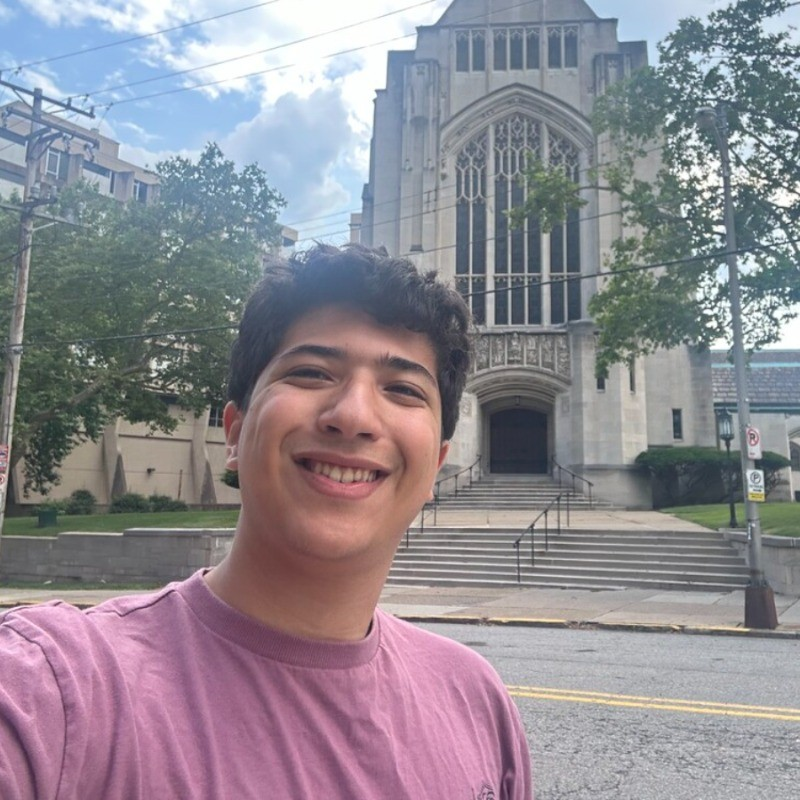

Cybersecurity & Data Science, with a Mathematics minor.
I work across security, data analysis, and applied AI, building
tools in Python and exploring systems with Rust and Linux.

I'm an Honors College student at Duquesne University pursuing dual degrees in Cybersecurity and Data Science with a minor in Mathematics, graduating in May 2027. From Casablanca, now in Pittsburgh, I bring a perspective shaped by living across cultures and communicating in Arabic, English, and French.
I like understanding systems: how they fail, how to secure them, and how to build useful tools from scratch. My experience spans aviation cybersecurity at Royal Air Maroc, SDG data analysis with the International Sibling Society, and AI research at Duquesne. My toolkit includes Python, R, Rust, C++, and Bash.
I'm a two-time ASA DataFest Judges' Choice Award recipient (2025 and 2026) and presented virtually at the ACUNS 2026 Annual Meeting in Lisbon on youth leadership and SDG trajectories. I now serve as Advisory Board Chair at the International Sibling Society. I enjoy turning complex findings into clear explanations, whether I'm presenting research, collaborating on Pittsburgh IQ, or helping someone work through a technical problem.
Two competitions, two Judges' Choice Awards. Analyzed unfamiliar datasets, built statistical and predictive models, and translated findings into dashboards and presentations under competition deadlines.
Award recipient · 2025 & 2026Co-built with Noah White, Oleg Hartman, and Alexander Kearney for the 2026 AI in Action Hackathon, partnering with Vicall. Search providers, prospects, and partners; retain dated source evidence, contact research, and website checks. Optional AI interprets retrieved evidence with citations.
Browser-based business research · 2026Presented virtually with ISS at the Annual Meeting in Lisbon. Explored trajectory-based SDG analysis, translating UN agendas into community action, and giving youth research a meaningful role in policy.
Watch the roundtable → 🔍 Python · Linux · SecurityA lightweight SIEM I built because I wanted one. Parses Linux auth logs, detects brute-force, root logins, off-hours access, port scans. Severity-scored reports. No agents, no cloud, no $40k license.
github.com/blissio/logscope →A desktop companion with tank treads. Raspberry Pi 4B, TTS + speech recognition, LLM served from local server, 3D-printed shell. Think BMO but for rough terrain. An ongoing exploration of local AI, computer vision, and physical computing.
in progress →Fused three independent detectors into one confident track using a 6D Kalman filter that models acceleration. Smoother predictions under occlusion. Co-built with a professor.
view on GitHub → 🎮 Java · Networking · Creative misuseCodespaces is a dev environment. I used it to host a modded 1.16.5 server. Ngrok, port forwarding, DNS. Friends joined from three countries. They've since patched it.
full writeup → 🐧 Shell · Arch · Void · HomelabMy riced Linux setup and self-hosted homelab config. Window manager, systemd services, shell utilities, the works. Opinionated. Documented. Breaks occasionally. That's the point.
view dotfiles →